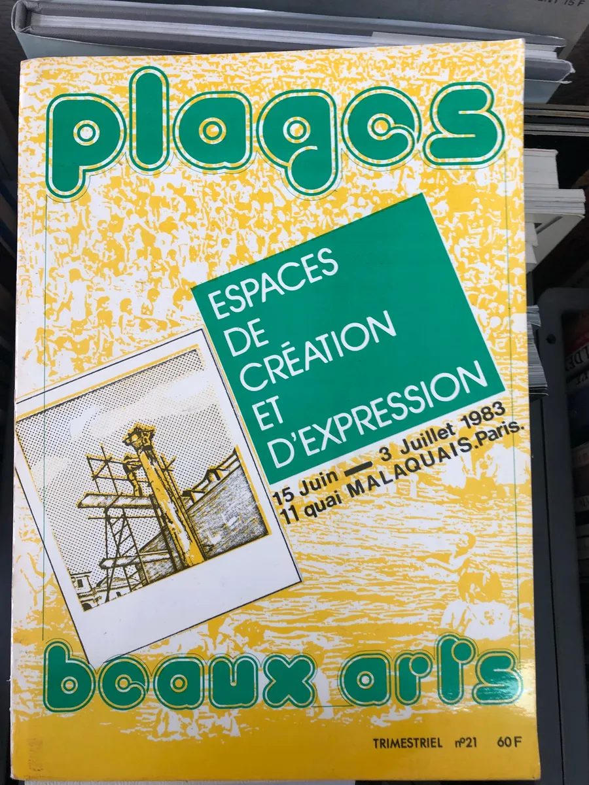

typefaces used :
- DINdong, Regular, typeface by Clara Sambot, typotheque ByeByeBinary
- BeauxArts80: personal interpretation of the cover's title typography of an old Beaux-Arts magazine in order to create an entire font inspired by the same roundness.
